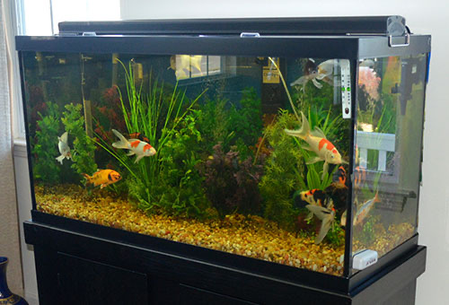
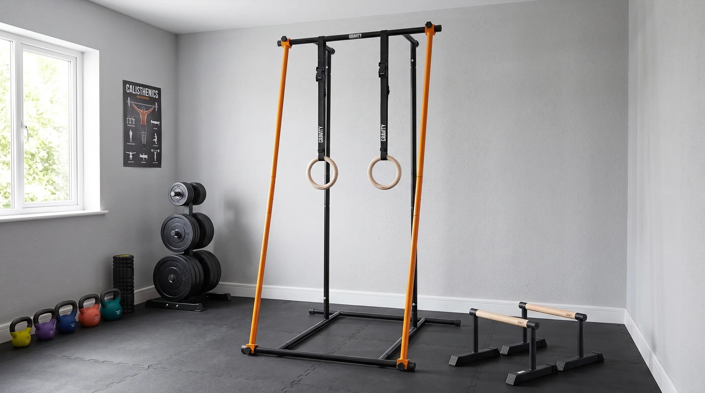
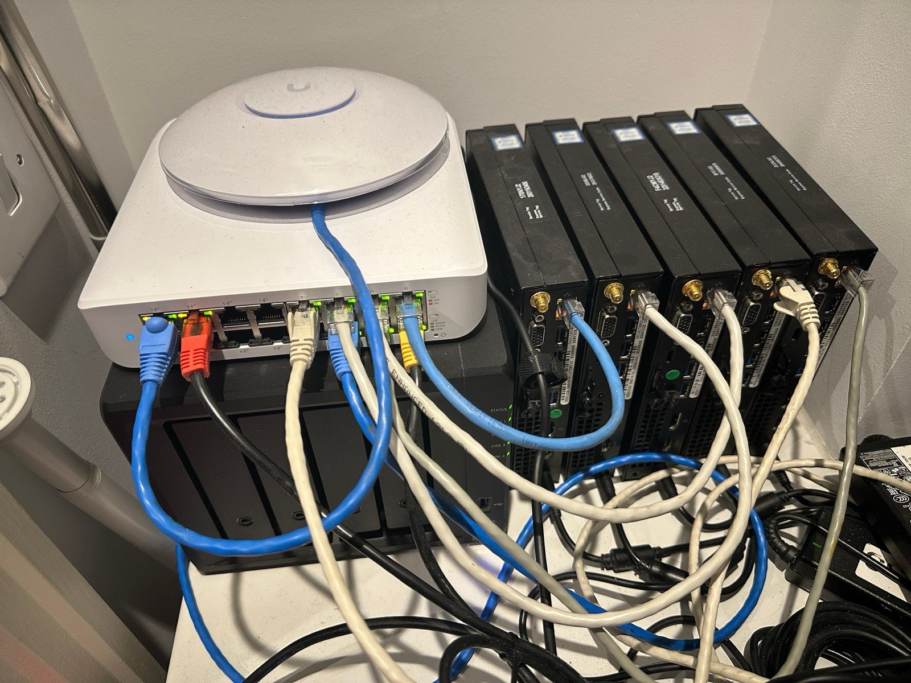

Hobbies
Some of these feed straight back into what I build. Others are a break from it, which is the point.

Freshwater aquarium
I keep a freshwater tank. Most of it is upkeep rather than setup: keeping the water steady, staying on top of the routine, and noticing when something is off before it turns into a problem.

Calisthenics and football
Calisthenics and strength training most weeks, and football when there is a game on. Both are the part of the day where nothing is on a screen.

DIY hardware
Taking hardware apart and giving it a second job. The current one is an old laptop running Zorin OS as a home server, sitting in the UAE and administered from wherever I am over Tailscale and SSH.
It is written up with the rest of my work on the projects page.
Also
Learning German
Currently learning it, slowly and on purpose.
Finance and strategy
Quantitative finance, crypto finance, and how companies actually decide things.
Capture the flag
Security competitions. The fastest way I have found to learn how something really works is to try to break it.
Game development
Building games as well as playing them, which is how the racing game came about.
Fragrances
An interest that turned into a database project. ScentMatch exists because I wanted a better way to find dupes.